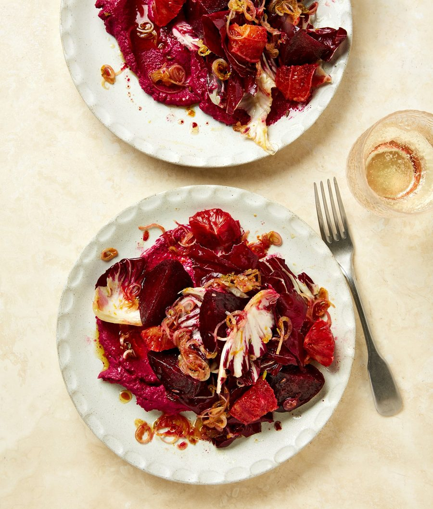

Beet-ing hearts salad

Blood orange looks particularly dramatic here, but a regular navel orange will also work just fine, if that’s all you have to hand.
If you’re working with raw beetroot, heat the oven to 220C (200C fan)/425F/gas 7. Wrap the beetroot in foil, put it on a lined baking tray and roast for an hour, until it’s easily pierced with the tip of a sharp knife. If you’re using shop-bought cooked beetroot, skip this step.
Meanwhile, in a medium bowl, mix the shallot, orange zest, fennel seeds, maple syrup, a tablespoon of oil, a teaspoon and a half of the vinegar and an eighth of a teaspoon of salt.
Top and tail the orange, then, working around its natural curves, cut away the skin and pith. Cut the flesh into eight chunks, removing and discarding any pith from the centre as you go.
When the beetroot is cool enough to handle, slide off the skin (wear rubber gloves, so you don’t stain your hands), then cut the beetroot into eight equal pieces (or four if working with two smaller beetroots). Set aside 60g cooked beetroot, put the rest in a small bowl with the remaining teaspoon of oil, quarter-teaspoon of vinegar and a pinch of salt, and toss to combine.
Put the reserved beetroot in the small bowl of a food processor with the ricotta and a quarter-teaspoon of salt and blitz smooth, scraping down the sides of the bowl as you go.
Just before serving, mix the torn radicchio leaves through the shallot dressing. Put half the ricotta mixture on each of two plates, top with the radicchio mix, beetroot wedges and pieces of orange, spoon any extra shallot dressing over the top and serve.